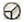

ОБ'ЄМНІ ДІАГРАМИ
Все ще використовуєте стандартні графіки для своїх презентацій? Тоді саме час подивитися, як за допомогою Illustrator можна легко створювати об'ємні діаграми.
Крок 1 - Малюємо графік
Виберіть Pie Graph Tool , клацніть по порожній області малюнка, після чого в меню, що введіть розмір бажаної діаграми 200x200px:
Таблиця даних.
Таблиця, до якої заносяться цифрові дані для побудови діаграми, показана нижче. Введіть у таблицю числа 15, 55 і 30, потім натисніть "галочку" у правому верхньому куті, щоб застосувати введені дані. Після цього таблицю можна закрити.
Крок 2
Розгрупуйте діаграму.
Щоб застосувати заливку і ефекти до кожного сектору діаграми окремо, всю діаграму потрібно розгрупувати. Для цього, не знімаючи з неї виделеенія, виберіть у меню Object> Ungroup або натисніть Ctrl + Shift + G. З'явиться попередження про те, що після разгруппировки редагування даних або зміна форми діаграми стане неможливою (After a graph is ungrouped you will no longer be able to access its graph style, its data or change its graph designs), просто натисніть Yes. Потім натисніть Ungroup ще раз, цього разу щоб остаточно розділити діаграму на складові. Залийте сектора бажаним кольором і видаліть обведення.
Крок 3
Застосуйте Extrude & Bevel
Виділіть будь-який фрагмент діаграми (наприклад, жовтий) і в меню виберіть Effect> 3D> Extrude & Bevel.
Додаткові параметри в меню Extrude & Bevel.
Якщо нижня частина меню не відображається, просто натисніть More Options. Тепер ви можете обертати кубик або ввести значанея повороту для осей XYZ вручну. Для Extrude Depth (це товщина вашого фрагмента), введіть 20 pt. Додайте ще джерело світла, клацнувши по іконці New Light, і розташуйте нове джерело, як показано нижче.
Крок 4
Новий графічний стиль.
Не знімаючи виділення з жовтого сектора, в палітрі, що відкрилася, Graphic Styles клацніть по іконці New Graphic Style, щоб створити новий стиль на основі виділеного об'єкта. Щоб викликати палітру Graphic Styles, виберіть Window> Graphic Styles або натисніть Shift + F5.
Крок 5
Застосування нового стилю.
Тепер виділіть помаранчевий і зелений сектора і клацніть по іконці щойно створеного стилю, щоб застосувати його до всіх частин діаграми.
Підсумок.
Останнє, що вам залишилося зробити - вирівняти шматочки діаграми. Після застосування стилю вони трохи розійшлися, так що саме час повернути їх по місцях за допомогою Selection Tool. Кольорова об'ємна діаграма готова.
1234567890